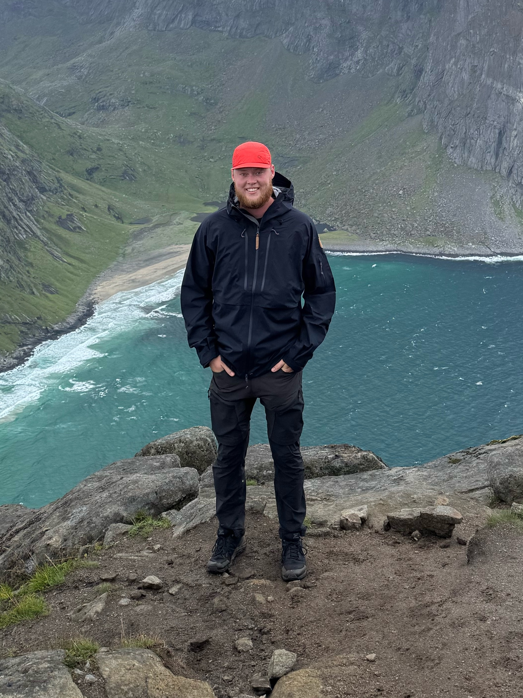
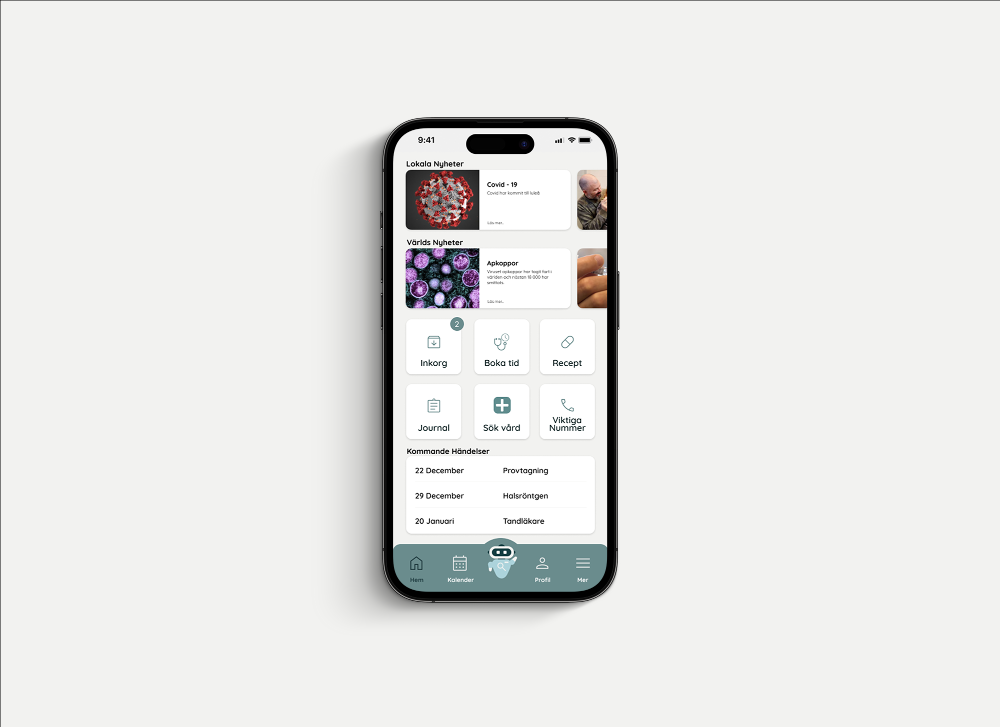

Story of the Stone Golem
A fairytale toy developed from magnetic stones into a textured, rigged and animated Blender world.
Industrial design engineer
Portfolio / 2026
Product · Mechanism · Motion
Industrial Design Engineer · Sweden
I turn ideas into physical products through prototyping, CAD and testing.

I’m an Industrial Design Engineer from Sweden who enjoys understanding how things work and finding practical ways to make them better.
I move between sketching, digital modeling and hands-on prototyping—developing ideas through testing, curiosity and careful refinement.
Scroll to workA fairytale toy developed from magnetic stones into a textured, rigged and animated Blender world.

A tactile two-player toy built only from wood and rubber bands.

Translating motorcycle heritage into a domestic product and prototype.

Scandinavian form language explored through CAD, material and rendering.

Movement rules translated into a coherent family of physical forms.

A clearer digital route through Swedish healthcare services.
Physical product development from user needs to a tested, manufacturable concept.
02 / About
I’m a newly graduated Industrial Design Engineer from Luleå University of Technology, specialized in product development and product design.
I enjoy understanding how things work—taking them apart, fixing them and turning ideas into practical, considered products. My approach combines CAD, prototyping, visualization and hands-on problem solving.
Running my own e-commerce company also taught me to work independently, collaborate with suppliers, understand customers and take responsibility from first decision to final delivery.
Curiosity usually starts with one question: how does this work — and could it work better?
03 / Contact
Let’s make something useful.Interested in working together or discussing a role? Get in touch.
Emailoskarjunebrink@gmail.com ↗Phone+46 73 620 52 42 ↗Instagram@oskar.junebrink ↗LinkedInOskar Junebrink ↗